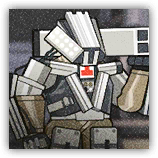
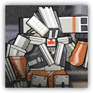

R-11突击动力装甲 R-11 Heavy Power Armor
近战 物理；精英 机械

|  |
无人操控的突击动力装甲。搭载了远程武器的型号，攻击力大幅度增强。这类实验性质的武器即使技术仍处在原型阶段，威力和能量也绝对不容小觑。 |
R-11突击动力装甲丨R-11 Heavy Power Armor
中型或大型构装（机械），无阵营
AC 20
先攻 +0（10）
HP 170（18d8+90）
速度 30尺
| 调整 | 豁免 | ||
|---|---|---|---|
| 力量 | 17 | +3 | +3 |
| 智力 | 12 | +1 | +1 |
| 调整 | 豁免 | ||
|---|---|---|---|
| 敏捷 | 10 | +0 | +4 |
| 感知 | 18 | +4 | +4 |
| 调整 | 豁免 | ||
|---|---|---|---|
| 体质 | 20 | +5 | +5 |
| 魅力 | 8 | -1 | +3 |
免疫 毒素，心灵；目盲，耳聋，力竭，震慑，麻痹，石化，中毒
感官 黑暗视觉120尺，盲视10尺，被动察觉14
语言 无
CR 9（XP 5,000；PB+4）
特质 Traits
充能激活 Charge Activation。突击动力装甲具有两发充能，其只有在充能充满之后才能行动1小时，然后充能耗尽。充能耗尽时，其处于失能状态且移动速度为0。
模块修复 Module Repair（3/天）。动力装甲受到修复术效应时，可以恢复18（4d8）的生命值。
稳定底盘 Stable Chassis。在对抗造成倒地状态或强制位移的效应时，动力装甲的体型视为大一级的体型，且所作的力量或体质豁免检定具有优势。
动作 Actions
多重攻击 Multiattack。突击动力装甲发动两次拳击攻击。
火箭齐射 Rocket Salvo（充能4~6）。突击动力装甲发动至多四次火箭攻击。其必须为每次攻击选择不同的目标。
拳击 Fist。近战攻击检定：+7，触及5尺。命中：18（4d6+4）钝击伤害。
火箭 Rocket。远程攻击检定：+8，射程120尺。命中：28（8d6）火焰伤害。
装甲解锁 Armor Unlocks。动力装甲开放装甲结构，允许一个中型或更小的生物进入自己体内或从中离开。处于装甲内期间，目标对外界的攻击或其他效应而言处于全身掩护，但同时陷入失能。如果生物具有重甲熟练，则其可以且仅可以在此失能期间通过意识操纵动力装甲的行动。
R-11a突击动力装甲 R-11a Heavy Power Armor
近战 物理；精英 机械
|  |
无人操控的突击动力装甲。搭载了远程武器的型号，攻击力大幅度增强。很难想象这种技术若是可以量产，将会带来怎样的改变。 |
R-11a突击动力装甲丨R-11a Heavy Power Armor
中型或大型构装（机械），无阵营
AC 22
先攻 +0（10）
HP 230（22d8+132）
速度 30尺
| 调整 | 豁免 | ||
|---|---|---|---|
| 力量 | 17 | +3 | +3 |
| 智力 | 12 | +1 | +1 |
| 调整 | 豁免 | ||
|---|---|---|---|
| 敏捷 | 10 | +0 | +5 |
| 感知 | 20 | +5 | +5 |
| 调整 | 豁免 | ||
|---|---|---|---|
| 体质 | 22 | +6 | +6 |
| 魅力 | 8 | -1 | +4 |
免疫 毒素，心灵；目盲，耳聋，力竭，麻痹，石化，中毒
感官 黑暗视觉120尺，盲视10尺，被动察觉15
语言 无
CR 14（XP 11,500；PB+5）
特质 Traits
充能激活 Charge Activation。动力装甲具有两发充能，其只有在充能充满之后才能行动1小时，然后充能耗尽。充能耗尽且不被生物着装时，其处于失能状态且移动速度为0。
模块修复 Module Repair（3/天）。动力装甲受到修复术效应时，可以恢复18（4d8）的生命值。
稳定底盘 Stable Chassis。在对抗造成倒地状态或强制位移的效应时，动力装甲的体型视为大一级的体型，且所作的力量或体质豁免检定具有优势。
动作 Actions
多重攻击 Multiattack。突击动力装甲发动三次拳击攻击。
火箭齐射 Rocket Salvo（充能4~6）。突击动力装甲发动至多四次火箭攻击。其必须为每次攻击选择不同的目标。
拳击 Fist。近战攻击检定：+8，触及5尺。命中：18（4d6+4）钝击伤害。
火箭 Rocket。远程攻击检定：+10，射程120尺。命中：42（12d6）火焰伤害。
装甲解锁 Armor Unlocks。动力装甲开放装甲结构，允许一个中型或更小的生物进入自己体内或从中离开。处于装甲内期间，目标对外界的攻击或其他效应而言处于全身掩护，但同时陷入失能。如果生物具有重甲熟练，则其可以且仅可以在此失能期间通过意识操纵动力装甲的行动。